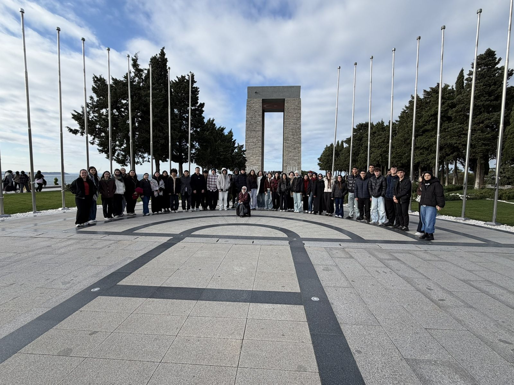

Çanakkale'deydik: Tarihin kalbinde unutulmaz bir gün
Okulumuz öğrencileri, öğretmenlerimizin rehberliğinde Çanakkale Savaşları Gelibolu Tarihi Alanı'nı ziyaret etti. Bir asrı aşkın zaman önce bu topraklarda yazılan destanı, kitap sayfalarından çıkarıp yerinde, adım adım hissettik.

Şehitler Abidesi'nde saygı duruşu
Gezimizin ilk durağı, Çanakkale Savaşları'nda şehit düşen askerlerimiz anısına yükselen Şehitler Abidesi oldu. Dört ayağı ve üzerindeki bayrağıyla göğe uzanan anıtın önünde öğrencilerimizle birlikte saygıyla durduk. Abidenin çevresindeki sessizlik, bu topraklarda verilen mücadelenin ne kadar büyük olduğunu hepimize bir kez daha hatırlattı.
Atatürk ve Mehmetçik heykelleri önünde
Tarihi alanda Atatürk ve Mehmetçik heykellerinin önünde toplandık. Öğretmenlerimiz, cephede yaşananları, askerlerimizin fedakârlığını ve Mustafa Kemal'in buradaki önderliğini anlattı. Öğrencilerimiz soruları ve dikkatleriyle gezinin her anına ortak oldu.
Gelibolu Tarihi Alanı'nda
Çanakkale Savaşları Gelibolu Tarihi Alan Başkanlığı'nın girişindeki "Çanakkale Geçilmez" yazısının önünde verdiğimiz hatıra fotoğrafı, günün en güzel anlarından biri oldu. Gün boyunca şehitlikleri ve anıtları gezen öğrencilerimiz, tarih derslerinde okuduklarını yerinde görmenin heyecanını yaşadı.